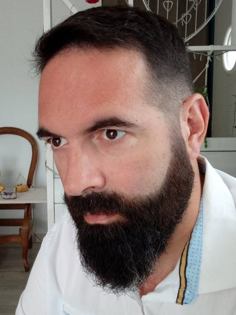
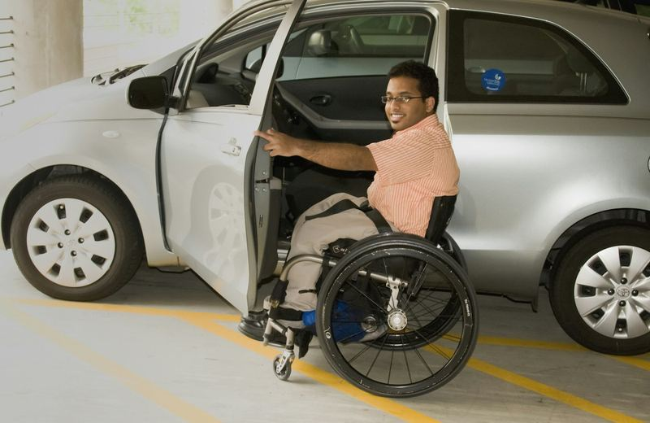

Près de 30 ans d'ergothérapie au service de l'autonomie
De la rééducation en neurologie à l'accompagnement à domicile, une expérience concrète du handicap mise au service de la juste indemnisation des victimes.

Fabien Lefranc
Ergothérapeute diplômé d'État depuis 1997, j'ai construit mon expérience là où le handicap se joue : en rééducation, puis au domicile des personnes.
Pendant de nombreuses années, j'ai exercé en services de soins de suivi et de réadaptation, notamment au SSR La Musse et au SSR Les Glamots, auprès de patients en neurologie et en rééducation fonctionnelle : récupération, apprentissage de nouvelles façons de faire, préparation du retour à domicile.
Depuis le 1er juillet 2024, j'interviens en SAVS (Service d'accompagnement à la vie sociale) auprès d'une cinquantaine de personnes en situation de handicap moteur avec troubles associés. J'interviens directement à leur domicile : c'est là, dans leur environnement réel, que les besoins se révèlent vraiment.
Ce double regard, hospitalier et écologique, m'a convaincu d'une chose : les besoins réels des personnes sont souvent invisibles dans les dossiers. C'est ce qui m'a conduit vers la réparation juridique du dommage corporel.
« Chaque victime mérite que sa vie quotidienne soit regardée avec précision. »
Une connaissance fine du matériel et un vrai réseau
J'ai créé assistant-ergo.fr, un outil d'aide à la préconisation destiné aux ergothérapeutes, qui recense notamment les fauteuils roulants et véhicules pour personnes handicapées (VPH) pris en charge par l'Assurance maladie.
Ce travail me donne une vision précise et à jour du marché et des tarifs. Je suis en lien régulier avec :
- des revendeurs de matériel médical et fabricants de VPH ;
- des équipementiers automobiles spécialisés dans l'adaptation des véhicules ;
- des artisans de l'aménagement du domicile.
Pour vos préconisations, cela signifie des solutions réalistes, des essais possibles et des devis fiables.

Ce que j'apporte à votre dossier
Évaluation fonctionnelle
Bilans d'autonomie dans les activités de la vie quotidienne, en situation réelle, à domicile.
Culture de la rééducation
Connaissance des pathologies neurologiques et orthopédiques et de leurs conséquences fonctionnelles.
Aides techniques & VPH
Expertise du matériel (fauteuils, aides à la toilette, transferts) et de sa prise en charge (LPPR).
Logement & véhicule
Préconisations techniques et réseau d'artisans et d'équipementiers pour des devis réalistes.
Aide humaine
Évaluation des besoins en aide humaine, expérience des dossiers MDPH et PCH.
Rédaction
Rapports et argumentaires clairs, structurés et sourcés.
Parlons de votre dossier
Un premier échange téléphonique, gratuit et sans engagement, permet de voir si mon intervention est utile et à quel moment de la procédure.